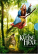

Die kleine Hexe ist mit ihren 127 Jahren viel zu jung, um mit den gro?en Hexen in der Walpurgisnacht auf dem Blocksberg zu tanzen. Doch das ist ihr egal: Sie springt auf ihren Besen und feiert den Hexentanz mit. Dass sie dabei erwischt werden konnte, damit hat sie allerdings nicht gerechnet. Zur Strafe muss sie alle Zauberspruche auswendig lernen und versprechen, eine gute Hexe zu werden. Aber wie soll sie das nur schaffen? Zum Gluck hilft ihr der Rabe Abraxas, ihr bester Freund. Fur alle Kinder ab 6 Jahren